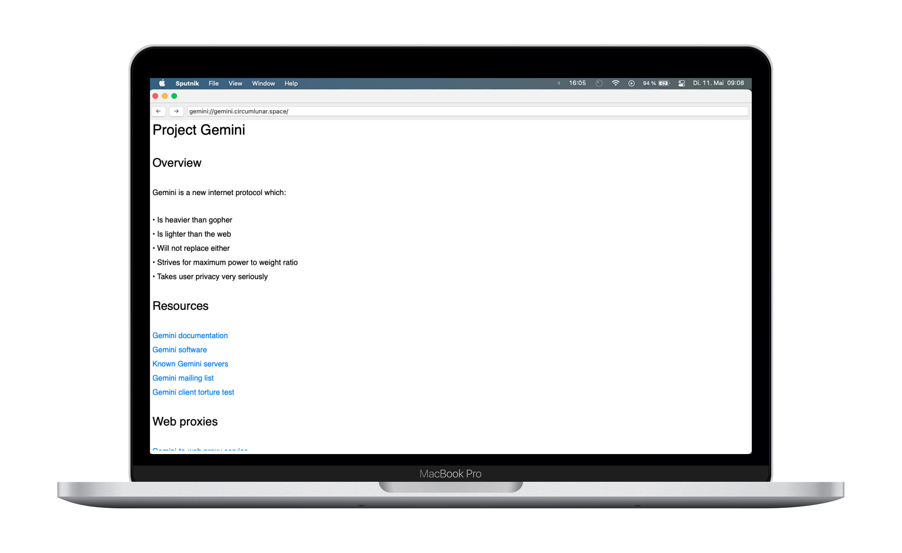
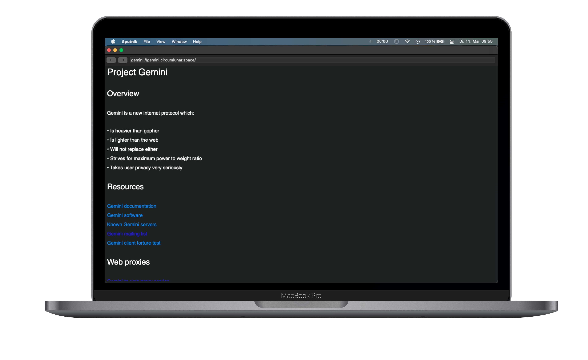

Sputnik
A gemini browser for macOS


Sputnik is a browser for MacOS that uses the
Gemini Protocol, a lightweight, low-energy protocol similar to HTTPS for reading gently
marked up text documents. It uses SwiftUI, a new UI framework from Apple
similar to Facebook's React Native. It's still a work in progress, but it's
mature enough to experience most of the current Geminispace.